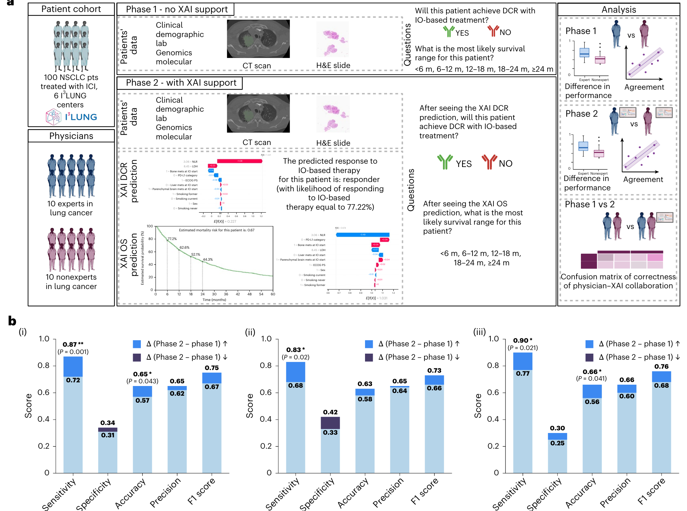

Prelaj et al.（2026）I3LUNG：可解釋 AI 輔助肺癌免疫治療決策
一句話
六個國家的醫院把兩千多位肺癌病人的資料交給 AI 學習，看 AI 能不能在打免疫治療「之前」就猜出誰會有效，再測試醫師拿到 AI 的建議和解釋後，判斷有沒有變準。
研究設計
- 對象：2,396 位晚期非小細胞肺癌（非小細胞肺癌與免疫治療）病人，都接受免疫治療或免疫合併化療 prelaj2026 p.1。
- 來自六個中心：義大利、希臘、德國、西班牙、美國、以色列 prelaj2026 p.2。
- 治療期間是 2012 年 9 月到 2023 年 10 月，屬於回溯性研究，也就是回頭整理過去的病歷 prelaj2026 p.2。
- 主分析用 2,075 人：1,550 人訓練、274 人測試；美國芝加哥大學的 251 人另外當外部驗證 prelaj2026 p.2。怎麼切資料見 訓練、交叉驗證、測試與外部驗證。
- 四種資料（多模態與資料融合）：臨床與抽血資料 2,396 人、基因 1,723 人、CT 1,705 人、病理切片 936 人 prelaj2026 p.2。
- 四種資料都齊全的只有 339 人 prelaj2026 p.2。
- 要預測的結果：整體存活、6 個月與 24 個月存活，以及疾病控制率 prelaj2026 p.2。
模型與結果
- 兩條路線：機器學習早期融合（MLEF）與深度學習中期融合（DLIF）prelaj2026 p.2。名詞見 機器學習、深度學習與 logistic regression。
- 只用臨床抽血資料的模型，在測試集預測 24 個月存活的 AUC 是 0.74；到外部驗證降為 0.60 prelaj2026 p.2。AUC 見 AUC 與 C-index。
- 單一指標 PD-L1 的 AUC 只有 0.53，AI 模型是 0.74 prelaj2026 p.6。PD-L1 見 生物標記。
- 用 AI 分出的低風險組中位存活 25.1 個月，高風險組 4.7 個月 prelaj2026 p.6。見 Kaplan-Meier 存活曲線與風險分組。
- 加入 CT 與病理的多模態模型，在交叉驗證把疾病控制 AUC 從 0.63 提到 0.77 prelaj2026 p.2；但在獨立測試集沒有一致重現 prelaj2026 p.5。見 資料越多越準？多模態的進步沒有重現。
XAI 怎麼做
- 用 SHAP 說明每個病人的預測是哪些因素推上去或拉下來的 prelaj2026 p.6。
- 最重要的負面因素：體能狀態較差（ECOG 大於 0）、骨轉移、肝轉移、腦轉移 prelaj2026 p.6。
- 臨床可用性研究：20 位醫師先自己判斷，再看 AI 與 SHAP 解釋後重新判斷 prelaj2026 p.6。
- 醫師預測疾病控制的敏感度從 0.72 升到 0.87 prelaj2026 p.6。敏感度見 敏感度、特異度、準確度與 kappa。

報告者的評讀
- 優點：規模大、跨國多中心，驗證切分嚴謹，而且少見地真的去測「醫師用了以後有沒有變好」。
- 限制：可用性研究沒有對照組，見 醫師變準了，是 AI 的功勞嗎？可用性研究的設計限制；專家反而更常跟著錯誤建議走，見 自動化偏誤。
- 外部驗證表現下降，見 換一家醫院，AI 就變笨了？外部驗證的掉分。
- 模型學到的可能只是「誰本來預後比較好」，見 「預測療效」還是「預估預後」？。